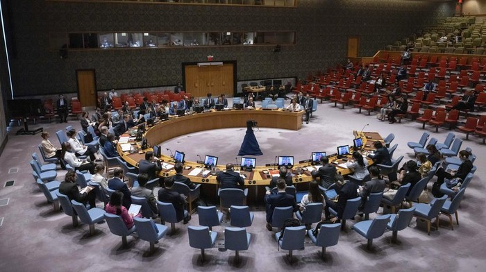

Kamis, 05 Jun 2025 18:11 WIB

Kelompok Hamas mengecam Amerika Serikat setelah negara itu memveto resolusi Dewan Keamanan PBB yang menyerukan gencatan senjata dan akses kemanusiaan tanpa batas di Gaza. Washington menyebut resolusi itu merusak diplomasi yang sedang berlangsung. Dilansir kantor berita AFP, Kamis (5/6/2025), Hamas mengutuk veto AS tersebut yang disebutnya "memalukan". Hamas pun mengulangi tuduhan "genosida" di Gaza. Selain berita tersebut, berikut ini berita-berita internasional yang menarik perhatian pembaca detikcom, hari ini, Kamis (5/6/2025): Trump Larang Warga 12 Negara Masuk AS, Termasuk Tetangga Indonesia Presiden Amerika Serikat Donald Trump menandatangani larangan perjalanan baru pada hari Rabu (4/6) waktu setempat, yang menargetkan 12 negara termasuk Afghanistan, Iran, Yaman dan negara tetangga Indonesia, Myanmar. Trump mengatakan tindakan tersebut dipicu oleh serangan bom api terhadap aksi protes Yahudi di Boulder, Colorado, AS belum lama ini. Dilansir kantor berita AFP, Kamis (5/6/2025), langkah tersebut melarang semua perjalanan ke Amerika Serikat oleh warga negara Afghanistan, Myanmar, Chad, Republik Kongo, Guinea Ekuatorial, Eritrea, Haiti, Iran, Libya, Somalia, Sudan, dan Yaman. Baca artikel detiknews, "5 Berita Terpopuler Internasional Hari Ini"